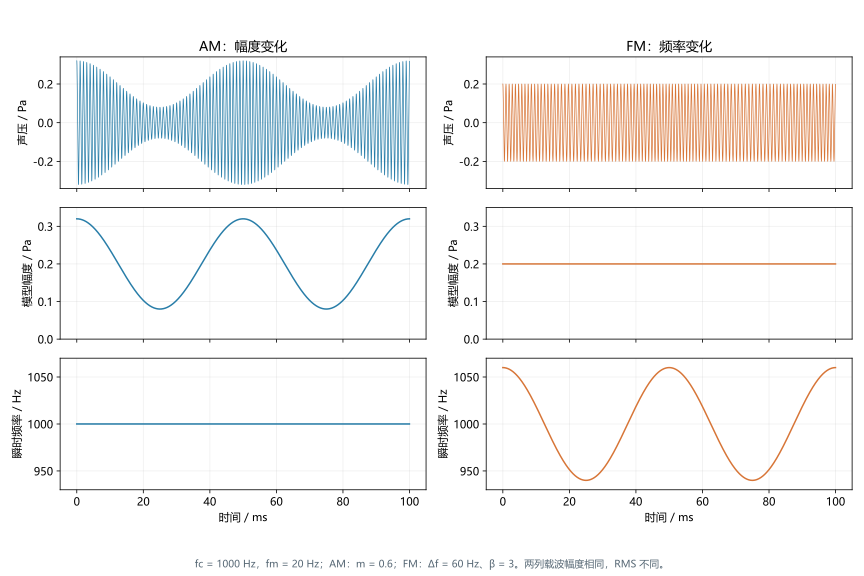
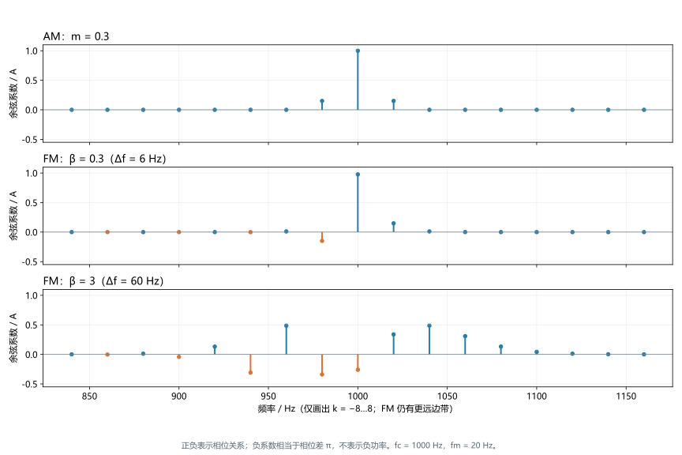
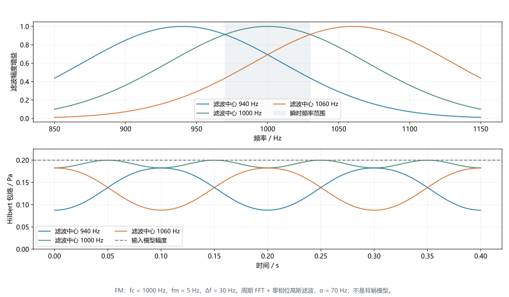
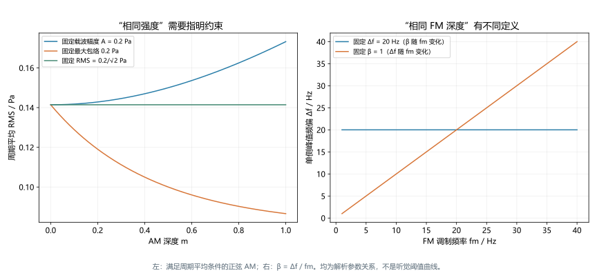

幅度调制与频率调制
深度词条 · 本地预览 · 2026-10-10 · Draft，尚未完成专业审阅
幅度调制（amplitude modulation，AM，也称振幅调制）是载波幅度随时间变化；频率调制（frequency modulation，FM）是载波瞬时频率随时间变化。两者都可用调制信号描述，但分别作用于幅度和相位轨迹。规则正弦调制是便于分析的基本模型，自然声音常同时包含多个速率、多个频带的幅度与频率变化。1
缓慢 AM 可以听成强弱起伏，缓慢 FM 可以听成音高摆动；较快速率下的音色、粗糙感或音高变化还依赖载波、深度和听觉条件。物理上“幅度恒定”的 FM 进入频率选择性系统后，也可能产生通道内幅度起伏。因此，刺激中的 AM／FM、听觉系统得到的线索和听者完成的任务，需要分别说明。810
阅读时可把本篇与时域包络和时域精细结构结合起来：前两者分别讨论幅度与相位的表征，本篇讨论怎样施加、测量和解释 AM／FM。对适合单分量描述的信号，AM 改变幅度项，FM 改变相位增长速率；但包络不只来自外加 AM，精细结构也不等同于 FM。14
一、共同描述：幅度、相位与瞬时频率
同一模型中的两个自由度
对一个适合单分量描述的载波，写成：
是模型幅度， 是以弧度表示的连续相位， 是瞬时频率。纯 AM 改变 ，纯 FM 改变相位增长的快慢；实际信号也可以同时改变二者。1
这里的“频率”不等于一小段 FFT 中最高谱峰的位置。瞬时频率来自相位导数，频谱描述整段记录中各频率分量的幅度和相位，两种表征回答不同问题。一个周期性 FM 信号在时间上频率往复变化，在足够长的频谱中却表现为稳定的多条边带。相关背景见纯音与复合音和频谱与功率谱密度。
需要分别报告的参数
| 符号 | 含义 | 单位与报告方式 |
|---|---|---|
| 载波或中心频率 | Hz；不等于调制速率 | |
| 周期性调制的重复速率 | Hz；AM 与 FM 都可使用 | |
| 标准正弦 AM 的深度 | 无量纲，通常为 0—1 | |
| 正弦 FM 的单侧峰值频偏 | Hz；峰峰频偏为 | |
| 正弦 FM 的调制指数 | ，无量纲 | |
| 初始载波相位 | rad；与调制初相位分别说明 |
例如载波为 1000 Hz、FM 速率为 5 Hz、单侧频偏为 30 Hz，表示瞬时频率每秒往复五次，在 970—1030 Hz 之间变化；它既不是每秒只产生五个声学周期，也不是频谱只有 970 和 1030 Hz 两条线。对随机调制，应补充调制波形、带宽、分布和相关时间，不能只列一个 。
二、幅度调制：深度、包络与平均能量
带载波的正弦 AM
听觉实验中常用的模型为：
在 且采用这一模型时，包络最大值为 ，最小值为 ，所以：
为未调制载波； 的模型包络恰好触及零。调制深度常写成 dB，例如 对应 −20 dB。这是相对调制度的对数表达，不是声压级或信噪比； 对应负无穷，实际程序需单独处理未调制条件。1
若 ，括号中的带符号幅度会跨过零，跨零可等效为载波相位翻转。在适用的窄带分解下，非负幅度取该项的绝对值，上述最大／最小包络公式不再按原样恢复 。噪声载波本来就有随机起伏，用其包络极值反算一个“正弦 AM 深度”也通常没有意义。
抑制载波形式与软件约定
通信中的双边带抑制载波可以写成 ，与含常数项的 不同。两者都可能被软件称为 AM。以 MATLAB 的 modulate 为例，方法名 am 对应抑制载波形式，带载波形式另有方法；照搬函数名可能合成出与实验设计不同的刺激。2
写刺激方法时应给出公式或代码、输入调制信号的范围，以及是否保留载波。调制后的峰值归一化、限幅和动态压缩还会进一步改变幅度、频谱或失真，不能只记录最初设置的 。
同幅度、同峰值与同 RMS
对满足频率分离和周期平均条件的正弦 AM，平均平方声压为：
因此保持 不变会使能量随深度增加。若要求与未调制幅度 的载波具有相同 RMS，应令 ；若固定最大包络，则需令 。短记录、起止窗和非正交分量应按最终波形重新计算 RMS，不能无条件套用周期平均式。
这三种约束服务于不同问题。等 RMS 有助于控制总体能量线索，固定峰值有助于处理播放余量，固定载波幅度方便观察边带增长；任何一种都不能自动保证等响度或等检测难度。声学实验还需说明播放系统校准、带宽与听者的可听度条件。
三、频率调制：从频偏积分得到相位
正弦 FM 的正确构造
若希望瞬时频率为 ，相位应由频率积分得到：
对 ：
对相位求导即可得到 。将时变频率直接放入 会多产生一项 ，通常不是想要的 FM。12
该式的 恒定，称为恒幅 FM；它描述所指定的振荡器模型。用 Hilbert 方法从任意实信号提取的幅度是否恒定，还取决于正负频率分离、调制范围和有限记录。本文教学参数的载波远高于调制速率，负频率交叠可忽略，不把这一近似推广到任意宽带或多分量信号。4
与相位调制及频率漂移的区别
相位调制（PM）把调制信号直接加入相位，例如 。这里 是峰值相位偏移，其瞬时频率偏移的峰值为 。对于单一正弦，PM 和 FM 可通过改变调制初相位和参数得到相同波形；对一般输入，FM 积分输入，PM 直接使用输入，不能只凭波形看起来“疏密变化”区分。2
固定 改变 会同时改变 ；固定 改变 会改变频偏。两种实验都可称为“改变 FM 速率”，实际刺激难度与频谱却可能不同。频率缓慢漂移、单向扫频和两个稳态纯音之间的频差，也不是同一种周期性 FM 任务。

图 1｜原创解析示意。两列均采用 1000 Hz 载波、20 Hz 调制和 0.2 Pa 载波幅度；AM 深度为 0.6，FM 单侧频偏为 60 Hz、调制指数为 3。中行画指定模型的幅度，末行画相位导数；两列没有匹配 RMS。定义依据官方调制文档，曲线由本文计算。1
四、频谱：两种调制都产生边带
AM 的三个分量
上述正弦 AM 可直接展开为：
载波幅度为 ，两个边带各为 。边带距载波的间隔是调制频率，边带相对幅度反映调制深度。谱线能否被听觉分别解析，还依赖听觉滤波器带宽、载波频率与水平；相同物理深度不必对应相同内部幅度变化。
FM 的贝塞尔边带与相位关系
令初相位为零，利用 Jacobi–Anger 展开：
是第一类贝塞尔函数。FM 理论上有无限阶边带，间距同样为 ，各阶系数由 决定。对载波足够高、各阶交叠可忽略的教学条件，该式清楚描述正频率附近的结构。3
小 时，、、，主要出现载波和一对边带。它与浅 AM 的幅度谱很相似，但低侧带的相位关系不同；只看绝对值频谱会遗漏这个区别。某阶系数为负表示相位差 ，不表示负幅度大小或负功率。
随着 增大，高阶边带变得重要，载波分量 可减小甚至在特定指数处为零；这不表示整个信号能量消失。在适用的分离与平均条件下，能量被重新分配到边带，不能把“载波线降低”当作“整体声音变弱”。
瞬时频率范围 也不是频谱的硬边界。FM 可在这个范围外有边带；合成时需要按可接受的带外能量设置采样余量，必要时过采样再滤波。单凭采样率超过两倍最大瞬时频率，不能保证所有 FM 参数都没有混叠。FFT 观察还需说明记录长度、窗和标度，参见频谱与功率谱密度。

图 2｜原创解析及 FFT 核验。横轴为频率，纵轴为余弦系数除以 A，保留正负号以显示相位关系；它不是功率谱密度。三行固定 1000 Hz 载波和 20 Hz 调制，分别为 AM m=0.3、FM β=0.3 与 β=3。仅显示 k=−8…8，FM 更远边带没有被宣称为零；信号未匹配能量或感知显著性。3
五、从输入到内部表征：FM 可以转成通道 AM
频率选择性改变输出幅度
把 FM 输入一个增益随频率变化的滤波器。当频率在通带斜坡上往复移动，输出增益也随之变化。在缓慢、小频偏和准稳态近似下：
若幅度响应在载波附近有非零斜率，一阶展开包含与 同速率的幅度变化。位于载波两侧的滤波器可产生相反方向的起伏；在对称通带中心，一阶变化可能很小，二阶项则可能产生两倍调制速率的变化。这是 FM-to-AM 转换的基本解释，不要求输入先具有外加 AM。10
真实耳蜗有多个频率通道、压缩、水平依赖与后续神经处理。上式是局部近似，不能直接预测每个听者的阈值。载波位于某个通道中心，也不表示所有相邻通道都处在中心；跨通道起伏模式可以提供输入单通道包络看不到的信息。

图 3｜原创合成演示。输入为 1000 Hz 载波、5 Hz FM、30 Hz 单侧频偏；使用中心分别为 940、1000、1060 Hz，σ=70 Hz 的高斯幅度响应。对两秒周期记录实施 FFT 零相位滤波，再取 Hilbert 包络。两侧输出的主要起伏为 5 Hz，中心输出为 10 Hz。该线性示意没有模拟耳蜗非线性、神经锁相或行为阈值；不是论文图的重绘。410
再生包络不只来自一种机制
时域包络与时域精细结构依所选分解和滤波尺度定义。把某个信号分解后保留相位部分，再送入新的滤波器，可能重新得到幅度起伏；输入的整体包络与接收端各通道包络不是同一对象。
但不能把所有“再生包络”都归因于纯 FM 的通带斜坡转换。Apoux 等的原始摘要指出，复合刺激的 Hilbert 精细结构可以保留或引入谱分量，并出现可感知 AM，FM-to-AM 转换不是包络恢复的必要解释。14 阅读相关实验时应核对原信号、归一化、频带重组及最后分析滤波，避免把一个数学分解名当作唯一生理机制。
六、听觉研究：检测结果怎样支持机制解释
AM 的时间调制传递函数与功能模型
时域调制传递函数（TMTF）通常在多种 下测量刚可检测的 AM 深度。噪声载波研究常见低通趋势，即较高速率需要更深调制才能检测；载波带宽、时长、起止方式和水平都会改变曲线。Viemeister 的经典研究支持把起伏检测作为时间处理问题，但不支持从一条行为曲线指定全听觉系统唯一的截止频率。5
Dau 等的功能模型把载波频率分析与调制频率分析分开：先经听觉滤波及非线性处理得到通道信号，再由调制滤波器分析起伏。这样，同一载波通道可对不同调制速率具有不同响应。6 AMT 的实现文档提供滤波、整流、低通、适应环和调制滤波器等阶段，输出中的载波通道频率与调制中心频率属于两个坐标。7
该模型解释检测与掩蔽的条件依赖，是可计算的功能框架；“调制滤波器”不自动对应某个单一神经元或确定的脑区。本词条没有运行 AMT，也没有用图 3 的高斯滤波器替代 Dau 模型。声学层面“没有外加 AM”和模型内部“没有调制响应”不能等同。
慢速 FM 与时间编码的经典解释
Moore 与 Sęk 的研究改变载波、调制速率及波形，并比较检测与 AM／FM 类型辨别。低载波、慢速 FM 的优势，以及附加 AM 在不同条件下的干扰，被解释为听者可能利用相位锁定相关的时间信息；更高速率或较高载波下，位置／包络线索可能更重要。89
这一推理依赖对干扰线索、听觉滤波和任务的假设。外加 AM 没有完全破坏慢速 FM 检测，可以支持存在其他可用线索，却不是对听神经放电的直接观察。相关原理见相位锁定；行为速率曲线不能独自量出人类神经锁相的上限，也不能规定所有人、所有载波通用的 AM／FM 机制切换点。
位置编码、中枢限制与尚未统一的解释
2020 年 Whiteford 等发现，频率选择性相关的行为指标与慢、快 FM 敏感性相关；跨载波 AM 相干性任务还可再现部分常用于支持时间编码的速率与载波效应。这使“同类现象也可由位置及通道起伏解释”成为可检验方案。研究采用特定筛选和任务条件，相关性与线索模拟不能证明时间编码完全不存在。10
2023 年的研究使用所有组成谐波均高于 8 kHz、但基频较低的复合音，仍发现慢速 FM 的优势，提示限制可能涉及中枢音高处理，不能仅按组成分量的神经锁相能力解释。这里调制的是谐波复合音的频率结构，结论不等于所有单一载波 FM 都使用同一种中枢机制。11
2026 年 Corbett 等比较可解析与不可解析谐波复合音的连续 FM 和离散频率变化。在所测速率与频带内，两类复合音的 FM 检测均随速率增加而变差；离散序列尤其在快速条件下更难检测。结果限制了仅凭侧带解析或简单频率快照推导速率效应的方案，也提示跨通道整合和声音对象形成可能重要。连续刺激与离散刺激的起止、间断和整合需求不同；该结果没有否定图 3 展示的物理转换。12
这些证据共同要求把可用线索与实际判决过程分开。一个信号在外周产生包络线索，不代表听者一定以该线索完成任务；相反，观察到慢速优势，也不足以确认唯一神经代码。涉及频率分辨率、时间分辨率和音高感知时，应明确载波类型、速率范围与测量指标。
年龄与听损需要控制什么
年龄和听力损失可能同时影响可听度、滤波选择性、幅度起伏利用及任务表现。2019 年的 AM／FM 类型辨别研究在匹配检测效率后仍观察到条件与个体差异；一些较年长听者保留了慢速条件的优势，不能把年龄组平均差异当作每个人的固定缺陷。13
AM 或 FM 阈值可以作为研究结果，但单次阈值并不独立定位损伤环节。解释人群差异需结合听阈、刺激感觉级、频率选择性、训练和注意等条件，并区分模型预测、行为关联与直接生理记录的证据强度。
七、测量任务与刺激控制
检测、速率辨别与类型辨别
| 任务 | 典型变化量 | 回答的问题 |
|---|---|---|
| AM 检测 | 或 | 能否分辨调制与未调制刺激？ |
| FM 检测 | 、 或相对频偏 | 能否发现连续频率变化？ |
| 调制速率辨别 | 固定基准附近的 差 | 能否区分起伏或摆动快慢？ |
| AM／FM 类型辨别 | 已可检测且匹配显著性的两类刺激 | 能否区分调制的性质？ |
| 稳态频差／离散变化检测 | 两个频率或交替序列的差 | 能否区分频率、整合间断变化？ |
AM 深度和 FM 频偏使用不同单位，不能把数值相等当作物理或感知深度相等。比较类型辨别时，可以先为每位听者测定各自检测阈值，再选择相同阈上倍数或其他显著性匹配方式；匹配方法本身也需要报告。813
强迫选择的区间数、自适应规则、目标正确率与阈值估计方法会影响结果。研究还应报告重复测量、练习、个体分布和不确定性；把这些不同任务统称为“时间分辨能力”会掩盖它们所要求的线索与决策过程。
频偏定义与频率尺度
有的论文报告单侧峰值频偏，有的报告峰峰频偏；在正弦 FM 下两者差两倍。相对频偏还需写清分母是载波频率、基频还是另一个参照量。对复合音统一按比例调制各谐波时，绝对频偏随谐波序号增长，不等于把所有分量都平移相同 Hz。12
若希望按音分对称地摆动，可以令 ，其中 为音分变化，再积分得到相位。它在对数频率上对称，在 Hz 上一般不具有上下相同频偏；方法中应写清用线性 Hz 还是对数音高尺度。相邻条目基频讨论复合音周期性，这里单一载波的瞬时频率不自动等于多分量声音的基频。
控制总体能量、起止线索与外加干扰
AM 检测若固定载波幅度，听者可能利用平均能量增长；FM 检测若出现意外幅度起伏，听者可能利用 AM。可依据研究问题匹配最终 RMS、引入独立水平扰动或设计附加 AM，但应说明每项控制改变了哪些线索。掩蔽 AM 还可能影响注意和判决，不能假定它只作用于单一外周通道。9
随机化载波或调制初相位可以减少固定起始线索，却也改变有限时长刺激中的波形。时长必须足以覆盖所研究的慢速变化；包含一小段弧线和包含许多完整调制周期的刺激，不能只凭相同 当作等价观察。起止窗、背景噪声、通道滤波及是否允许整体能量线索，都应进入可复现记录。

图 4｜原创解析参数对照。左图显示不同归一化规则下 RMS 随 AM 深度的变化，采用周期平均条件；右图对比固定单侧频偏 20 Hz 和固定 FM 指数 1 时改变速率的结果。它们是物理控制关系，不是检测阈值或等响度曲线。
八、自然声音与试听示例
语音与音乐中的联合变化
音乐中的强弱颤动常与 AM 联系，音高颤动常与 FM 联系；真实演奏还会改变谐波幅度、谱包络、气流和发声方式。对具有多个谐波的乐音，用一个纯音 AM／FM 模型解释所有颤音与音色变化会丢失这些协变结构。
语音中，音节和发音动作产生慢幅度变化，声带振动与语调产生周期性及基频轨迹，不同频带还具有不同包络。Drullman 等的包络平滑研究说明语音识别受调制结构影响，效果依频带、处理方式和材料而定；不能把某个处理条件下的低通截止直接规定为自然语音唯一的调制带宽。15
AM 和 FM 可以联合构造为 。即使单独 AM、FM 参数相同，二者的相对时间关系也会改变滤波后起伏模式。研究自然信号时需要说明是在整体波形、子带还是谐波轨迹上估计调制，以及压缩、声码器和重合成怎样改变这些关系。
四个可对照的合成声音
以下示例均为 1000 Hz 载波、两秒单声道信号，含 20 ms 余弦起止渐变。AM 深度为 0.6；FM 单侧频偏为 30 Hz，速率为 5 或 40 Hz，所以两个 FM 的指数分别为 6 和 0.75。各文件在起止处理后匹配整体数字 RMS=0.1，不代表校准声压级、等响度或等显著性。播放设备和听者条件会改变体验。
慢速 AM： Hz，。
慢速 FM： Hz， Hz。
较快速 AM： Hz，。
较快速 FM： Hz， Hz。
可以先比较同速率下的强弱起伏与频率摆动，再比较速率升高后的听感变化。这些声音仅用于建立参数直觉，没有匹配个人检测阈值，也不能用试听是否容易来检验某种神经机制或评价个人听力。
九、人工耳蜗：声学 FM 与脉冲率调制
电刺激中的三个速率
在人工耳蜗中，脉冲幅度调制改变电流幅度，脉冲率调制改变脉冲发生的时间安排；处理帧率规定多久更新一次参数。脉冲率、调制率和帧率必须分别报告，且不能直接把声学载波频率替换成其中任意一个。
对平均脉冲率 ，若计划脉冲率为 ，一个事件安排思路是对 积分，每跨过一个整数累计量安排一次脉冲。这样调制的是脉冲间隔，和连续声学 FM 的相位积分有形式联系；实际设备的时钟、脉冲宽度、多通道排程和总速率约束必须另行处理，不能直接采用声学波形作为刺激程序。
固定电极的脉冲率变化、脉冲幅度起伏和刺激位置变化又是不同操作。增加脉冲率不会自动复制声学 FM 在耳蜗中移动的激励图样，改变刺激位置也不等于保持位置的时间编码。讨论策略时需从输入音频、处理器特征、电脉冲序列到感知任务逐层说明。
时间编码策略的证据范围
原 AM 词条涉及的 TLE 将时域信息转换为可利用的刺激变化。2022 年论文的原始摘要报告，在真实人工耳蜗使用者的特定音高任务中，与 ACE 比较可见条件依赖的改善；基频辨别与音高排序的结果不能互换，也不能由某个信号公式推断通用收益。16
协变 AM 与脉冲率的研究进一步检验联合线索。本词条引用的是 2025 年 medRxiv v1 预印本，未同行评审：其摘要报告较高测试速率下特定比较的辨别收益，较低速率条件未显示同样收益。它没有建立所有速率、所有基线和所有个体均受益的结论。17
这项研究需按版本追踪；本文没有将 v1 当作最新稿，也没有把后续同一研究版本算作独立证据。电刺激调幅深度还涉及个体电流动态范围与响度增长，声学 的数值不能不经定义直接迁移。相关策略背景见人工耳蜗信号处理策略与F0inTFS。
十、计算与解释中的常见误区
Hilbert 分析能够给出什么
常用解析信号为 ，取 得到该分析尺度上的幅度，取连续展开相位后求导得到瞬时频率。4 对离散数据，可以用相邻相位差乘以 ，结果比原记录少一个样本；应说明对应区间的时间标记，而不是悄悄把长度补齐并当作同一估计。
对多分量信号，整体 Hilbert 相位导数未必对应任一声源的频率或知觉基频。幅度接近零时相位不稳定，噪声、有限记录边缘和解卷绕错误可产生很大频率尖峰。应检查幅度门限、记录延拓、分析滤波与端点排除，并把所用分解定义写清；“瞬时频率发生跳跃”可能是估计问题，也可能是信号本身的变化。
结果解释的层次
| 常见说法 | 更精确的解释 |
|---|---|
| FM 幅度不变，所以听觉没有包络线索 | 恒幅描述输入模型，频率选择性可在通道内产生起伏 |
| AM 与 FM 都有一对边带，所以它们相同 | 浅调制的幅度谱可相近，相位关系与高阶边带不同 |
| 更快 FM 的阈值变差，证明锁相截止 | 还需考虑频谱、通道整合、任务和中枢限制 |
| 固定 FM 指数就固定频率摆幅 | ；改变速率也改变频偏 |
| 同数字 RMS 就同响度、同可检测性 | 数字能量、声学校准和感知匹配属于不同约束 |
| 一个调制检测结果就是时间分辨率 | 检测、速率辨别、类型辨别和间断整合需分别解释 |
这些区分使 AM／FM 成为连接信号表征和听觉研究的工具：先定义最终信号，再确定各通道可能获得的线索，最后检验行为或神经证据支持怎样的解释。相关掩蔽实验与模型比较也需要沿用同样的参数和任务边界。
来源与示意说明
本词条在原《振幅调制》基础上整合 FM，保留 amplitude-modulation 地址和旧名称别名。资料检索于 2026 年 10 月 10 日核验，采用官方数学／软件文档、经典心理声学论文、2020—2026 年机制研究及原词条电刺激研究。通过主题检索和两篇种子论文的前后向引文检索得到 29 条去重候选，再按问题定向补查；这是有边界的文献整合，不是穷尽检索的系统综述。
参考条目注明实际阅读范围。2020 与 2026 年论文读取了支持本文讨论的原文方法、结果或讨论段落；部分经典、人群、语音和电刺激研究仅核到原始摘要，因此没有补写全文才可核验的阈值曲线、效应量或模型参数。2023 年论文按原始摘要引用；预印本按明确的 v1 版本引用，未核到该稿的同行评审版本。
四张图均由 scripts/generate-am-fm.py 生成。图 1、2、4 是解析参数关系，图 3 是周期记录上的线性滤波演示；四个音频也是原创合成信号。生成程序核验 AM 平均平方值、FM 条件下的平均平方值、贝塞尔系数与 FFT 的一致性、滤波后包络主频以及 WAV 的数字 RMS。它没有重做被引论文实验、运行 AMT、生成临床电刺激或拟合听觉阈值；数值通过不等于机制解释完成专业审阅。
参考文献与证据范围
[1] MathWorks (官方文档（2026-10-10 核验）). Analog Baseband Modulation. Communications Toolbox 官方文档。访问范围：documentation。阅读一般载波模型及 AM、FM、PM 定义；用于区分幅度与相位轨迹。本文采样条件另依据实际边带与数值误差核验，未将简化载波采样条件推广为所有 FM 的充分条件。
[2] MathWorks (官方文档（2026-10-10 核验）). modulate — Modulation. Signal Processing Toolbox 官方文档。访问范围：documentation。阅读 am、amdsb-tc、fm、pm 等方法定义和参数：默认 am 为抑制载波形式；FM 累积调制输入，PM 直接改变相位。未实际运行 MATLAB，也未把默认参数当作心理声学刺激规范。
[3] NIST Digital Library of Mathematical Functions (在线数学参考（2026-10-10 核验）). DLMF §10.12 — Generating Function and Associated Series. NIST DLMF, Bessel Functions。访问范围：documentation。阅读生成函数与 Jacobi–Anger 展开；支持正弦 FM 的贝塞尔边带系数。图中符号、FFT 系数、截断阶数和平方和由本文独立计算，不是听觉实验结果。
[4] SciPy developers (Documentation). scipy.signal.hilbert. SciPy reference documentation。访问范围：documentation。解析信号与包络的数学定义及实现；这是方法文档，不是生理机制证据。
[5] Neal F. Viemeister (1979). Temporal modulation transfer functions based upon modulation thresholds. The Journal of the Acoustical Society of America。访问范围：abstract。噪声载波的调制检测阈与 TMTF；用于说明调制检测随速率和刺激条件变化，不能等同于包络编码硬截止。
[6] Torsten Dau, Birger Kollmeier, Armin Kohlrausch (1997). Modeling auditory processing of amplitude modulation. I. Detection and masking with narrow-band carriers. The Journal of the Acoustical Society of America。访问范围：abstract。调制检测和调制掩蔽的模型；调制滤波器是功能建模入口，不当作已确认的唯一神经实现。
[7] Auditory Modeling Toolbox (AMT 1.6.0 文档（2026-10-10 核验）). dau1997 — Modulation filterbank model. Auditory Modeling Toolbox 官方模型文档。访问范围：documentation。阅读滤波、整流、低通、适应环和调制滤波器的结构及 fc / mfc 输出说明；未实际运行工具箱、拟合阈值或验证神经回路。
[8] Brian C. J. Moore; Aleksander Sęk (1995). Effects of carrier frequency, modulation rate, and modulation waveform on the detection of modulation and the discrimination of modulation type (amplitude modulation versus frequency modulation). Journal of the Acoustical Society of America, 97(4), 2468–2478。访问范围：abstract。阅读原始摘要：载波、速率、波形及匹配检测显著性后的 AM/FM 类型辨别。未读取全文阈值曲线，未据此指定普适速率分界。
[9] Brian C. J. Moore; Aleksander Sęk (1996). Detection of frequency modulation at low modulation rates: evidence for a mechanism based on phase locking. Journal of the Acoustical Society of America, 100(4 Pt 1), 2320–2331。访问范围：abstract。阅读原始摘要：随载波及调制速率变化的附加 AM 干扰，为慢速 FM 时间编码解释提供行为证据。不是直接神经记录，也未读取全文参数表。
[10] Kelly L. Whiteford; Heather A. Kreft; Andrew J. Oxenham (2020). The role of cochlear place coding in the perception of frequency modulation. eLife, 9, e58468。访问范围：fulltext。通过 Europe PMC 原文 XML 阅读摘要、讨论中统一位置编码与替代解释、FM/AM 检测与跨载波 AM 相干辨别方法和参与者筛选；并核对期刊图页。未复现阈值数据；相关与模拟任务不能证明时间编码完全不存在。
[11] Kelly L. Whiteford; Andrew J. Oxenham (2023). Sensitivity to Frequency Modulation is Limited Centrally. Journal of Neuroscience, 43(20), 3687–3695。访问范围：abstract。阅读原始摘要与书目：低 F0、高频谐波的 FM 检测支持中枢限制解释；没有据摘要声称直接记录人类听神经或否定所有锁相机制。
[12] Penelope J. Corbett; Kelly L. Whiteford; Andrew J. Oxenham (2026). Detecting continuous and discrete frequency changes as a function of spectral resolvability and modulation rate. JASA Express Letters, 6(7), 074401。访问范围：fulltext。阅读原文 XML 摘要、参与者、连续 FM 与离散音序列、程序、结果及讨论相关段落；已发表期刊论文，非预印本。用于限定简单侧带解析或频率快照预测，未把它解释成否定所有 FM-to-AM 转换。
[13] Brian C. J. Moore; S. Mariathasan; Aleksander P. Sęk (2019). Effects of Age and Hearing Loss on the Discrimination of Amplitude and Frequency Modulation for 2- and 10-Hz Rates. Trends in Hearing, 23。访问范围：abstract。阅读原始摘要：匹配检测效率后的类型辨别，年龄和听损相关差异及个体异质性。全文 XML 获取失败，未声称读取全部方法或把任务作为独立临床诊断。
[14] Apoux F, Millman RE, Viemeister NF, Brown CA, Bacon SP. (2011). On the mechanisms involved in the recovery of envelope information from temporal fine structure. The Journal of the Acoustical Society of America, 130(1), 273-282。访问范围：abstract。期刊研究。核对原始摘要、公开全文页面的理论与实验概述；XML获取失败，不声称完成全文逐段核验。
[15] Drullman R, Festen JM, Plomp R. (1994). Effect of temporal envelope smearing on speech reception. The Journal of the Acoustical Society of America, 95(2), 1053-1064。访问范围：abstract。期刊研究。核对原始摘要与书目；包络低通对所用句子和音素任务的影响，16赫兹结果保留低频调制完整等条件。
[16] Huali Zhou, Alan Kan, Guangzheng Yu, Zhenyu Guo, Nengheng Zheng, Qinglin Meng (2022). Pitch Perception With the Temporal Limits Encoder for Cochlear Implants. IEEE Transactions on Neural Systems and Rehabilitation Engineering。访问范围：abstract。真实人工耳蜗的音高辨别与排序；效果按频率和任务限定，具体方法待全文审阅。
[17] Hongxin Li, Huali Zhou, Limin Pang, Juanjuan Li, Chaogang Wei, Peina Wu, Qinglin Meng, Xianhai Zeng (2025). Covarying Amplitude Modulation and Pulse Rate Enhances Pitch Discrimination in Cochlear Implant Users. medRxiv。访问范围：abstract。协变调制频率与脉冲率的探索性音高辨别结果；预印本未同行评审，同一研究的后续版本不算独立证据。